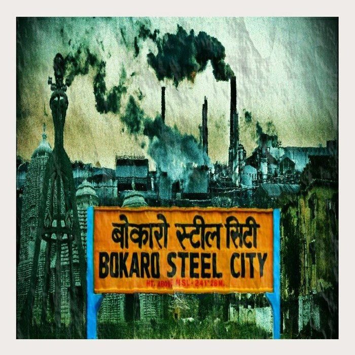
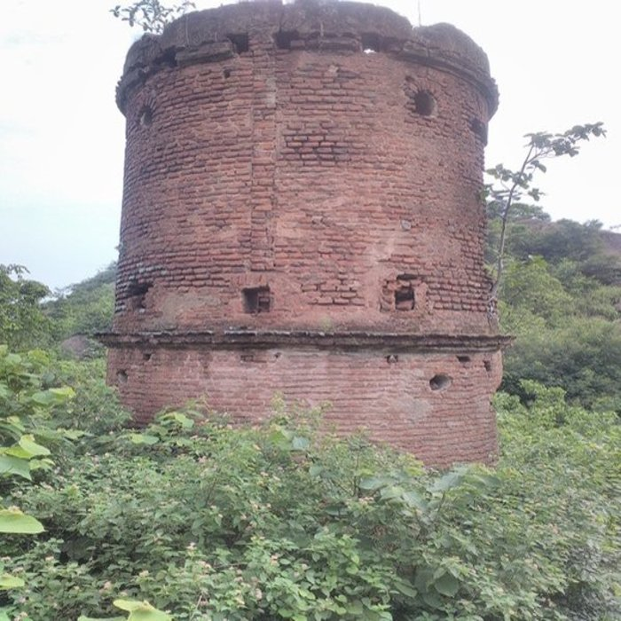
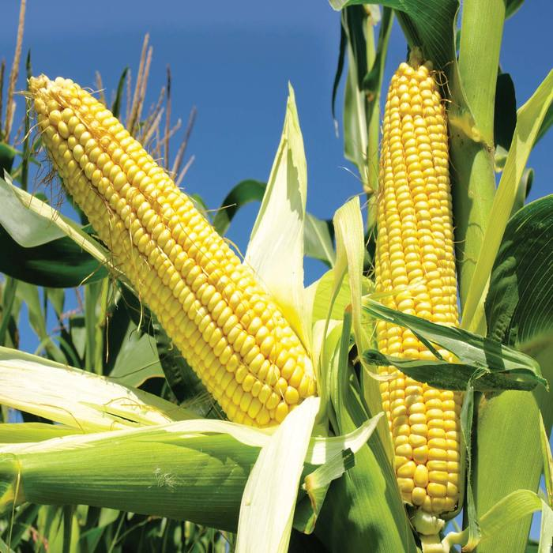

This district of Bokaro was created on 1st April, 1991 by taking out Chas and Chandankiyari C.D.Blocks of Dhanbad district and the entire Bermo Subdivision of Giridih district and then merging them to form a new district. Bokaro district is bounded on the east by Dhanbad district and some portion of West Bengal State, on the west by Ramgarh district, on the south by Purulia district of West Bengal and on the north by parts of Giridih, Hazaribag and Dhanbad districts. The district extends between 23o26” to 23o57” North Latitude and 85o34” to 86o26” East Latitude. The district is located at an elevation of 200-546 m. from mean sea level. The Settlement Report for Manbhum, 1928 and the District Gazetteer for Dhanbad, 1964 are the sources available to trace some historical background of newly created district of Bokaro. As a matter of fact, not much information is available for Bokaro district exclusively. The District of Dhanbad was created on 24.10.1956 on the recommendation of the State Reconstitution Commission. The then district of Dhanbad consisted of two subdivisions, viz., Dhanbad Sadar & Baghmara. On 01.04.1991 the Baghmara Subdivision, known as Chas Subdivision, became part and parcel of Bokaro district.
The early history of the greater part of the area is difficult to trace, as the present district of Bokaro forms only a small and insignificant part of Manbhum. In the Settlement Report of Manbhum, It has been stated that no rock inscription, no copper plates or old coins were discovered in course of the survey and settlement operations. The oldest authentic documents produced were all on paper and they are barely a hundred years old. Earlier, district of Bokaro, which till 1991 Census was part of Dhanbad district, was in turn, part of the old district of Manbhum. Manbhum derived its name from Raja Man Singh who got this territory as a gift from Emperor Akbar. Later on the extremely vast and far-flung district of Manbhum, got divided into Birbhum, Manbhum and Singhbhum. The area now forming part of Bokaro district was inhabited primarily by the people of Kolar race. The earliest civilization in the area was that of Jains in around 600 B.C. The Jain domination was superseded by Brahamins around 7th century A.D. as is evident from the travel account of Hiuen Tsang which makes a mention of powerful kingdom ruled by Sasanka who was a persecutor of Buddhists. The Brahamical civilization was at its prime in the 10th century A.D. and was destroyed completely thereafter by the Bhumij and Mundari tribe. During Akbar’s time, Raja Man Singh led his troops from Bhagalpur to Midnapur through Jharkhand area and he might have passed through the areas covered by Bokaro district.
The old district of Manbhum (consisting of the present Bokaro district) was acquired by the British in 1765. During the British period a series of military operation brought the petty Zamindar under control. The permanent settlement was effected in this area in 1796. In 1805 a new district named Jungle Mahal was constituted into a separate magisterial charge with headquarters at Bankura. In 1833 the district of Jungle Mahal was broken up and a new district called Manbhum was constituted, later on in 1838 Purulia was fixed as the headquarter of Manbhum district. In fact, Bokaro, the industrial area of prominence gained importance and won the famous place in the map of India with decision of Govt. of India in the early 1960’s to establish modern public Sector Steel Plant with the collaboration of the Soviet Russia. It was in 1966 that Smt. Indira Gandhi, the late Prime Minister laid the foundation stone of what today is famous as Bokaro Steel Plant. Again in early 1990’s a new horizon had opened with the identification of enormous source of Methane gas in the Chandankiyari area by the ONGC. It is reported that the ONGC is planning to establish an enormous Gas Plant in the region, which will be greater in size and importance than the present Bokaro Steel Plant.
The district extends between 23o26”-23o57” North Latitude and 85o34”-86o26” East Latitude. Bokaro uplands (in the western part), Bokaro-Chas uplands (middle part), Damodar-Barakar Basin (eastern part), are the Physical Divisions of which Bokaro -Chas uplands is the major physical division in the district. The region forms the south-western portion of the district. It extends from the north to the south. River Damodar forms it’s northern boundary. The region is bounded by the state of West Bengal in the south, Damodar-Barakar Basin in the east and by Giridih district in the west. It comprises the major portion of Chas and small portion of Chandankiyari C.D. Blocks. The entire region has undulating surface. The height varies between 200 m to 282 m. The general slope of the region is from the west to the east. Damodar is the main river which flows along with its tributaries like Garga and Parga in this tract. Minor rivers which flow in the district are Bokaro, Kunar, Khusa and Uri. The other river of the district is Gobei, which flows through Chandankiyari block area and Konar in Gomia block. Scattered patches of forest are found all over the region. Its geology is related to Chotanagpur gneiss. Soil is Ustalfs-Aqualfs-Ochrepts. The average annual rainfall is 1,291.2 mm. Paddy, Millets and pulses are the main crops of the region. The district is located at an elevation of 200-546 m. from mean sea level. The highest peak are Dhamdharwatoli (740 m.), Lugu Pahar (1070 m.), Chainpur (700m.), Bhaski (793 m.). All these peaks are found in the western part of the district. Ravines are found in the western part of the district having rugged topography. Major portion of the district is comprised of Chotanagpur Gneiss and small patches of Goudwana formations with thick layers of coal.
Rice & Maize are the main agricultural crops while Bajara, Wheat, Pulses and vegetables are other crops grown. A marginal portion of non forest, G.M. land, and Raiyati land is under horticulture and social forestry.
The Bermo-Phusro Coal field area is entirely situated in this district and is rich for coal. A part from coal other minerals for extraction are Stone, Stone Boulders. Production of Stone Chip is also done.
District headquarter of Bokaro occupies very important place in industrialization of Jharkhand and country as a whole. During 1965 4th integrated steel plant in the Public Sector with collaboration of Soviet Union was started. At present production of steel in Bokaro steel plant is 4 million tones which is likely to go up to 10 million tones annually. Bokaro is thus stated to be India’s largest Steel manufacturing Complex, Coal for the steel plant is supplied from different Washeries of district i.e. at Dugdha, Kathara, Karagali etc.
Bokaro is connected by Train/Rail route also. The Bokaro Steel city is connected to Grand cord line at Gomo Railway station. Important Trains Like Satabdi Express between Bokaro and Howrah, Hatia Patna Express. Alleppy Express and Jharkhand Swarn Jayanti Express between Hatia to Delhi (Bi-weekly) run through this station. For other places trains can be boarded at Dhanbad Railway Station, which is at a distance of only 45 Kms. from Bokaro and grand cord line passing through it.